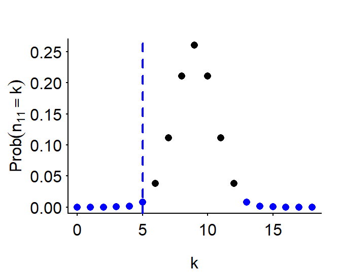

| Categorised as bet | Categorised as bat | |
|---|---|---|
| Is bet | 15 | 6 |
| Is bat | 6 | 8 |
Exact significance tests for 2 × 2 tables
R
significance
Two-by-two contingency tables are so common and look so simple that you’d be forgiven for thinking they’re straightforward to analyse. A glance at the statistical literature on the analysis of contingency tables, however, reveals a plethora of techniques and controversies surrounding them that will quickly disabuse you of this notion (see, for instance, Fagerland et al. 2017). In this blog post, I discuss a handful of different study designs that give rise to two-by-two tables and present a few exact significance tests that can be applied to these tables. More exhaustive overviews can be found in the references.
Preliminaries
Two-by-two contingency tables
\[\begin{array}{l|c|c||c} & y_1 & y_2 & \textrm{Row total} \\ \hline x_1 & n_{11} & n_{12} & n_{1+} \\ x_2 & n_{21} & n_{22} & n_{2+} \\ \hline \textrm{Column total} & n_{+1} & n_{+2} & n_{++} \\ \end{array}\]Exact and approximate tests
This blog post is about exact significance tests. An exact test
If the null hypothesis is true, the \(p\)-value that the test yields is a random variable \(P\) with the property that \[\mathbb{P}(P \leq \alpha) \leq \alpha\] for each \(\alpha \in (0, 1)\). This means that, if the null hypothesis is true, there is at most a 5% probability that the test will yield a \(p\)-value of 0.05 or below. Similarly, if the null hypothesis is true, there is at most a 20% probability that the test will yield a \(p\)-value of 0.20 or below. Ideally, \(\mathbb{P}(P \leq \alpha)\) should be close to, but no larger than, \(\alpha\): If \(\mathbb{P}(P \leq \alpha)\) tends to be considerably lower than \(\alpha\), i.e., if the test is conservative, this will negatively affect the test’s power.
Tests that aren’t exact can still be approximate. A possible problem with approximate tests is that their justification depends on results derived for large samples; for smaller samples, \(\mathbb{P}(P \leq \alpha)\) may be substantially larger than \(\alpha\). The best-known approximate test used for the analysis of two-by-two contingency tables is Pearson’s \(\chi^2\)-test. In the following, I will only discuss exact tests.
Contingency tables with both margins fixed
Two-by-two contingency tables can be the result of different research designs – some fairly common, others exceedingly rare.
Example 1 (Fisher’s exact test, one-sided). Say we want to establish if a learner of English is able to tell the /æ/ phoneme in bat and the /ɛ/ phoneme in bet apart. To this end, we make 35 recordings, 21 of which contain the word bet and 14 contain the word bat. The learner is then asked to identify those 21 audio files that he thinks are recordings of bet; the remaining 14 audio files are suspected recordings of bat. The results are summarised in the following contingency table:
Note that we insisted that the learner select exactly 21 suspected recordings of bet, no more and no fewer. As a result, the column total \(n_{+1}\) was known in advance. Moreover, we knew beforehand that 21 of the recordings actually featured bet and 14 of the recordings actually featured bat. Hence, the row totals \(n_{1+}, n_{2+}\) were also known in advance. As a result, \(n_{++}\) and \(n_{+2}\) were also known in advance. Consequently, this study design fixes both the row and column marginals. What wasn’t known in advance was the number of suspected bet recordings that actually were bet recordings (\(n_{11}\)).
The null hypothesis in this setting is that the learner is incapable of distinguishing bet from bat recordings and just selected 21 random audio files as suspected bet recordings in order to comply with the instructions. Under this null hypothesis, the top left entry in the contingency table (\(n_{11}\)) follows a hypergeometric distribution with parameters \(n_{1+} = 21, n_{2+} = 14\) and \(n_{+1} = 21\). (Different authors parametrise this distribution differently; I use the parametrisation that’s used in R.) That is,
\[H_0 : n_{11} \sim \textrm{Hypergeometric}(\underbrace{21}_{\textrm{is bet}}, \underbrace{14}_{\textrm{is bat}}, \underbrace{21}_{\textrm{to be categorised as bet}}).\] Figure Figure 1 shows the probability mass and cumulative probability functions of the \(\textrm{Hypergeometric}(21, 14, 21)\) distribution. The observed top-left entry, i.e., 15, is highlighted in blue.
If the learner did not just pick 21 audio files at random but was in fact able to tell bet and bat recordings apart to some degree, this top-left entry can be expected to be large as opposed to small. This means that we want to compute a right-sided \(p\)-value, which we do by calculating
\[\mathbb{P}(n_{11} \geq 15) = 1 - \mathbb{P}(n_{11} \leq 14):\]
1 - phyper(15 - 1, 21, 14, 21)[1] 0.09059986This computation amounts to running Fisher’s exact test:
tab <- rbind(c(15, 6), c(6, 8))
fisher.test(tab, alternative = "greater")$p.value[1] 0.09059986Example 2 (Fisher’s exact test, two-sided). Let’s slightly change the design of the study in Example 1. Instead of recording bet 21 times and bat 14 times and asking the learner to select 21 suspected bet recordings, we record both bet and bat 18 times and ask the learner to select 18 suspected bet recordings. The results are summarised in the following contingency table:
| Categorised as bet | Categorised as bat | |
|---|---|---|
| Is bet | 5 | 13 |
| Is bat | 13 | 5 |
Under the null hypothesis that the learner possesses no relevant discriminatory ability, the top-left entry (\(n_{11}\)) follows a \(\textrm{Hypergeometric}(18, 18, 18)\) distribution; see Figure Figure 2. The observed top-left entry (5) is highlighted by the dashed blue line.

Of note, the learner seems to be able to tell bet and bat apart to some extent – it’s just that he seems to identify bet recordings as bat and vice versa. Since we’re interested in the learner’s discriminatory ability, regardless of whether he is then also able to correctly label the two categories, we want to compute a two-sided \(p\)-value. The most common way to do so is to sum the probability masses \(\mathbb{P}(n_{11} = k), k = 1, \dots, n_{+1},\) that are no greater than the probability mass of the actually observed top-left entry. These are the probability masses coloured blue in Figure Figure 2.
p_k <- dhyper(0:18, 18, 18, 18)
sum(p_k[p_k <= dhyper(5, 18, 18, 18)])[1] 0.01839395Fisher’s exact test effects the same computation.
fisher.test(tab)$p.value[1] 0.01839395Contingency tables with one margin fixed
Contingency tables in which both the row and column margins are fixed in advance are a rare sight. Considerably more common are contingency tables where only the row margins (or only the column margins) are known beforehand.
Example 3 ().
# tab <- rbind(c(6, 4), c(4, 16))
# rownames(tab) <- c("were happy", "were unhappy")
# colnames(tab) <- c("programme A", "programme B")
# tabBoschloo’s test:
\[\begin{align*} H_0~:~ & n_{11} \sim \textrm{Binomial}(n_{1+}, \pi), \\ & n_{21} \sim \textrm{Binomial}(n_{2+}, \pi), \end{align*}\] with some shared but unknown \(\pi \in [0,1]\).
boschloo_test <- function(tab, alternative = "two.sided", pi_range = c(0, 1), stepsize = 0.001) {
# This test assumes fixed row sums.
# If gamma is set, use the Berger-Boos method. Set to 0 to use vanilla Boschloo.
# stepsize governs granularity of search through nuisance parameter value candidates.
if (alternative == "two.sided") {
# Truncate two-sided p-value at 1
return(
min(2 * min(boschloo_test(tab, alternative = "less", pi_range = pi_range, stepsize = stepsize),
boschloo_test(tab, alternative = "greater", pi_range = pi_range, stepsize = stepsize)),
1)
)
}
# Use Fisher's exact test p-value as test statistic
statistic <- function(x) fisher.test(x, alternative = alternative)$p.value
# Construct grid with possible results
row_sums <- rowSums(tab)
my_grid <- expand.grid(y = 0:row_sums[1], n = 0:row_sums[2])
my_grid$statistic <- NA
for (i in 1:nrow(my_grid)) {
my_tab <- rbind(c(my_grid$y[i], row_sums[1] - my_grid$y[i]),
c(my_grid$n[i], row_sums[2] - my_grid$n[i]))
my_grid$statistic[i] <- statistic(my_tab)
}
my_grid$statistic[is.na(my_grid$statistic)] <- 1
# Compute observed test statistic
obs_p <- statistic(tab)
is_extreme <- my_grid$statistic <= obs_p
# Maximise p value over range
pis <- seq(pi_range[1], pi_range[2], by = stepsize)
max_p <- 0
for (pi in pis) {
current_p <- weighted.mean(x = is_extreme,
w = dbinom(my_grid$y, row_sums[1], pi) * dbinom(my_grid$n, row_sums[2], pi))
if (current_p > max_p) max_p <- current_p
}
max_p
}
# Two-sided
boschloo_test(tab) # 0.1034638[1] 0.01137868exact2x2::boschloo(6, 6+8,15, 15+6)$p.value # 0.1035[1] 0.1034637# Greater
boschloo_test(tab, alternative = "greater") # 0.05173189[1] 0.9953883exact2x2::boschloo(6, 6+8,15, 15+6, alternative = "greater")$p.value # 0.05173[1] 0.05173187# Less
boschloo_test(tab, alternative = "less") # 0.9578511[1] 0.005689342exact2x2::boschloo(6, 6+8,15, 15+6, alternative = "less")$p.value # 0.9579[1] 0.9578511Contingency tables with only the total sum fixed
unconditional_test <- function(tab, alternative = "two.sided", gamma = 0.001, stepsize = 0.001) {
if (alternative == "two.sided") {
return(2 * min(unconditional_test(tab, alternative = "less", stepsize = stepsize),
unconditional_test(tab, alternative = "greater", stepsize = stepsize)))
}
# Use Fisher's exact test p-value as test statistic
statistic <- function(x) fisher.test(x, alternative = alternative)$p.value
# Helper function for multinomial weights
weights <- function(pi_row, pi_col, n11, n12, n21, n22) {
(pi_row*pi_col)^my_grid$n11 * (pi_row * (1 - pi_col))^my_grid$n12 *
((1 - pi_row)*pi_col)^my_grid$n21 * ((1 - pi_row)*(1 - pi_col))^my_grid$n22 *
factorial(total_sum)/(factorial(my_grid$n11) * factorial(my_grid$n12) * factorial(my_grid$n21) * factorial(my_grid$n22))
}
# Construct grid with possible results
total_sum <- sum(tab)
my_grid <- expand.grid(n11 = 0:total_sum,
n12 = 0:total_sum,
n21 = 0:total_sum)
my_grid$n22 <- total_sum - my_grid$n11 - my_grid$n12 - my_grid$n21
my_grid <- subset(my_grid, n22 >= 0)
my_grid$statistic <- NA
for (i in 1:nrow(my_grid)) {
my_tab <- rbind(c(my_grid$n11[i], my_grid$n12[i]),
c(my_grid$n21[i], my_grid$n22[i]))
my_grid$statistic[i] <- statistic(my_tab)
}
my_grid$statistic[is.na(my_grid$statistic)] <- 1
# Construct confidence rectangle for pi_row and pi_col
# (is this sensible?)
row_ci <- c(0, 1)
col_ci <- c(0, 1)
if (gamma != 0) {
row_ci <- binom.test(tab[1, 1], tab[1, 1] + tab[1, 2], conf.level = sqrt(1 - gamma))$conf.int
col_ci <- binom.test(tab[1, 1], tab[1, 1] + tab[2, 1], conf.level = sqrt(1 - gamma))$conf.int
}
# Compute observed test statistic
obs_p <- statistic(tab)
is_lower <- my_grid$statistic <= obs_p
# Maximise p value over grid
pis <- expand.grid(
pi_row = seq(row_ci[1], row_ci[2], by = stepsize),
pi_col = seq(col_ci[1], row_ci[2], by = stepsize)
)
max_p <- 0
for (i in 1:nrow(pis)) {
pi_row <- pis$pi_row[i]
pi_col <- pis$pi_col[i]
w <- weights(pi_row, pi_col, my_grid$n11, my_grid$n12, my_grid$n21, my_grid$n22)
current_p <- weighted.mean(is_lower, w = w)
if (current_p > max_p) max_p <- current_p
}
max_p + gamma
}
# unconditional_test(tab, alternative = "greater", stepsize = 0.001)
# unconditional_test(tab, stepsize = 0.001)
Exact::exact.test(tab, model = "multinomial")
Z-pooled Exact Test
data: x11=5, x12=13, x21=13, x22=5
test statistic = -2.6667, total sample size = 36, p-value = 0.03616
alternative hypothesis: true difference in product of proportion is not equal to 0
sample estimates:
difference in product of proportion
-0.1111111 Exact::exact.test(tab, model = "multinomial", alternative = "greater", np.interval = TRUE, method = "Boschloo")
Boschloo's Exact Test with Interval Approach
data: x11=5, x12=13, x21=13, x22=5
test statistic = 0.99889, total sample size = 36, p-value = 0.9966
alternative hypothesis: true difference in product of proportion is greater than 0
sample estimates:
difference in product of proportion
-0.1111111 Contingency tables with nothing fixed
References
Berger, Roger L. & Dennis D. Boos. 1994. p-values maximized over a confidence set for the nuisance parameter. Journal of the American Statistical Association 89(427). 1012-1016.
Fagerland, Morten W., Stian Lydersen & Petter Laake. 2017. Statistical analysis of contingency tables. Boca Raton, FL: Chapman and Hall/CRC.
Lydersen, Stian, Morten W. Fagerland & Petter Laake. 2009. Recommended test for association in 2 × 2 tables. Statistics in Medicine 28(7). 1159-1175.
Shan, Guogen & Gregory Wilding. 2014. Unconditional tests for association in 2 × 2 contingency tables in the total sum fixed design. Statistica Neerlandica 69(1). 67-83.